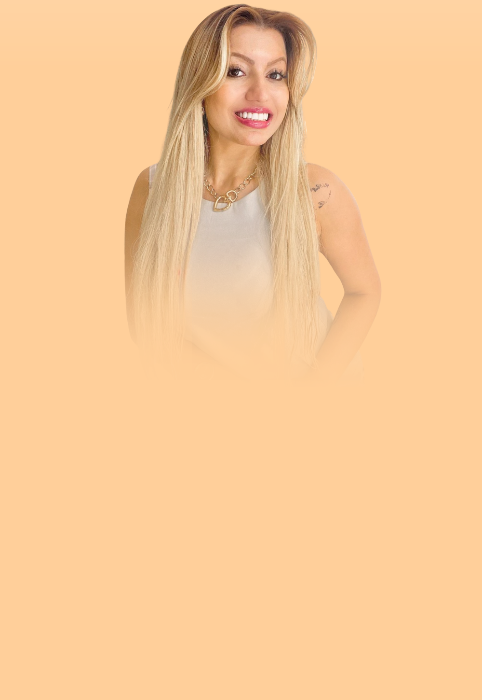
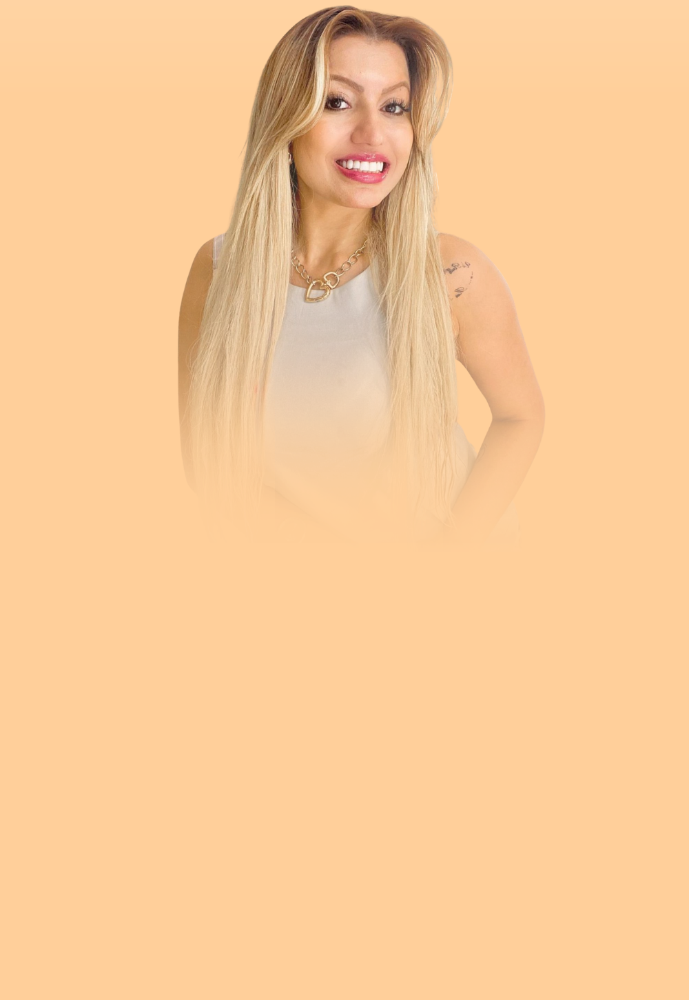

PSICÓLOGA COGNITIVO
COMPORTAMENTAL
CRP: 20/12613
É possível ser feliz e viver uma
vida com amor e significado!

Olá! Sou Susan Elise,
Psicóloga formada pela Universidade Federal de Roraima. Sou apaixonada pela minha profissão e amo poder fazer a diferença na vida de meus pacientes.
Sou Pós-Graduanda em Neuropsicologia, pelo Hospital Israelita Albert Einstein
e possuo Formação em Desenvolvimento Humano na Infância e Adolescência, pela USP, Universidade Federal de São Paulo. A terapia online que ofereço vai além das fronteiras geográficas, atendendo pacientes em todo o Brasil e brasileiros no exterior.
Entendo que a busca por terapia muitas vezes surge diante de um sofrimento que nos paralisa, comumente fazendo com que acreditemos que não há motivos para termos esperanças sobre a possibilidade de melhoria. Nesse sentido, a minha missão é proporcionar um espaço ético, sigiloso, humanizado,
acolhedor e personalizado para cada demanda e paciente. Estou comprometida em guiá-lo em sua jornada de autoconhecimento, transformação emocional e fomento da sua saúde mental, com ferramentas totalmente baseadas em estudos científicos, com comprovação de suas eficácias.
Desbravando o Caminho da Terapia Online: Encontre a Luz no Fim do Túnel Emocional
Na jornada da vida, enfrentamos desafios emocionais que, por vezes, parecem insuperáveis. No entanto, é importante compreender que a terapia online oferece um caminho luminoso em meio às sombras, um espaço seguro onde a cura e o crescimento pessoal são possíveis, independentemente da distância física que nos separa.
Por meio dessa plataforma, encontramos não apenas um ouvinte atento, mas um guia habilidoso que nos auxilia a desvendar os nós emocionais que nos prendem, a compreender nossos padrões de pensamento e comportamento, e a cultivar uma maior resiliência diante das adversidades.
Assim, permita-se explorar esse oceano de possibilidades terapêuticas, onde cada sessão é uma jornada de autodescoberta e fortalecimento interior. Afinal, é na coragem de buscar ajuda que encontramos a chave para desatar os nós que nos impedem de alcançar a plenitude emocional e o bem-estar duradouro.
Veja alguns depoimentos
Perguntas Frequentes
Cada sessão tem 50 minutos.
A primeira consulta é R$ 200,00.
Resposta para a pergunta 3.